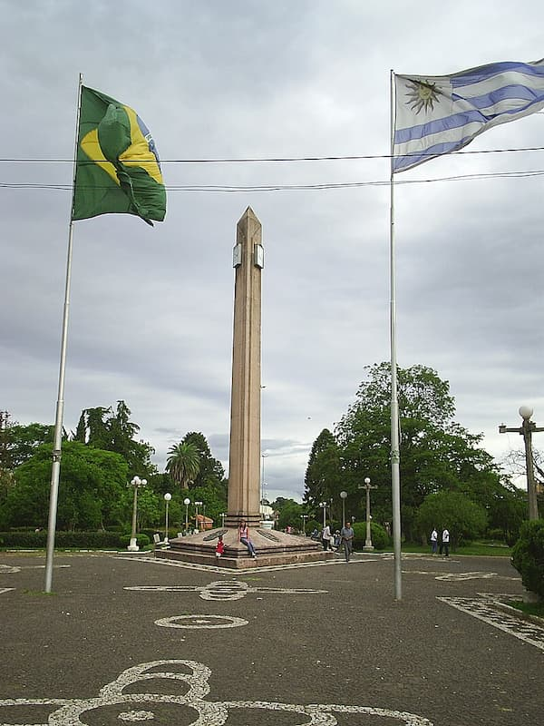

Rivera is the capital of Rivera Department of Uruguay.
The border with Brazil joins it with the Brazilian city of Santana do Livramento, which is only a block away from it, at the north end of Route 5
Together, they form an urban area of around 200,000 inhabitants. As of the census of 2011, it is the sixth most populated city of Uruguay.
